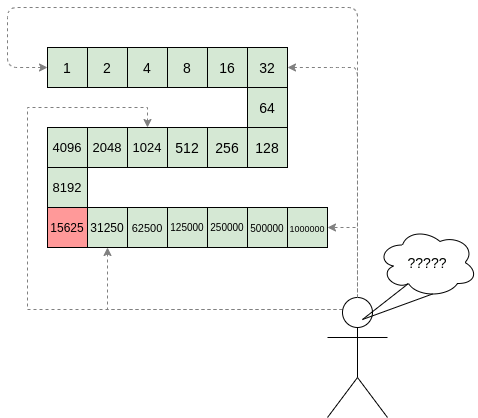
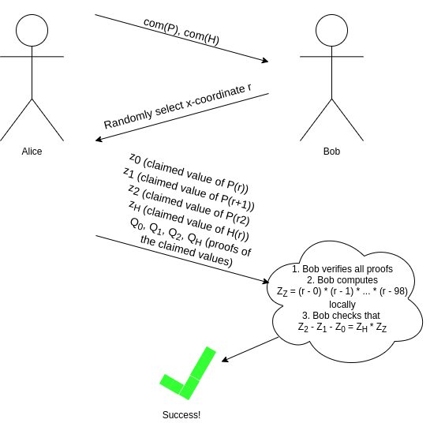

An approximate introduction to how zk-SNARKs are possible
2021 Jan 26
See all posts
An approximate introduction to how zk-SNARKs are possible
Special thanks to Dankrad Feist, Karl Floersch and Hsiao-wei Wang for feedback and review.
Perhaps the most powerful cryptographic technology to come out of the last decade is general-purpose succinct zero knowledge proofs, usually called zk-SNARKs ("zero knowledge succinct arguments of knowledge"). A zk-SNARK allows you to generate a proof that some computation has some particular output, in such a way that the proof can be verified extremely quickly even if the underlying computation takes a very long time to run. The "ZK" ("zero knowledge") part adds an additional feature: the proof can keep some of the inputs to the computation hidden.
For example, you can make a proof for the statement "I know a secret number such that if you take the word ‘cow', add the number to the end, and SHA256 hash it 100 million times, the output starts with 0x57d00485aa". The verifier can verify the proof far more quickly than it would take for them to run 100 million hashes themselves, and the proof would also not reveal what the secret number is.
In the context of blockchains, this has two very powerful applications:
- Scalability: if a block takes a long time to verify, one person can verify it and generate a proof, and everyone else can just quickly verify the proof instead
- Privacy: you can prove that you have the right to transfer some asset (you received it, and you didn't already transfer it) without revealing the link to which asset you received. This ensures security without unduly leaking information about who is transacting with whom to the public.
But zk-SNARKs are quite complex; indeed, as recently as in 2014-17 they were still frequently called "moon math". The good news is that since then, the protocols have become simpler and our understanding of them has become much better. This post will try to explain how ZK-SNARKs work, in a way that should be understandable to someone with a medium level of understanding of mathematics.
Note that we will focus on scalability; privacy for these protocols is actually relatively easy once the scalability is there, so we will get back to that topic at the end.
Why ZK-SNARKs "should" be hard
Let us take the example that we started with: we have a number (we can encode "cow" followed by the secret input as an integer), we take the SHA256 hash of that number, then we do that again another 99,999,999 times, we get the output, and we check what its starting digits are. This is a huge computation.
A "succinct" proof is one where both the size of the proof and the time required to verify it grow much more slowly than the computation to be verified. If we want a "succinct" proof, we cannot require the verifier to do some work per round of hashing (because then the verification time would be proportional to the computation). Instead, the verifier must somehow check the whole computation without peeking into each individual piece of the computation.
One natural technique is random sampling: how about we just have the verifier peek into the computation in 500 different places, check that those parts are correct, and if all 500 checks pass then assume that the rest of the computation must with high probability be fine, too?
Such a procedure could even be turned into a non-interactive proof using the Fiat-Shamir heuristic: the prover computes a Merkle root of the computation, uses the Merkle root to pseudorandomly choose 500 indices, and provides the 500 corresponding Merkle branches of the data. The key idea is that the prover does not know which branches they will need to reveal until they have already "committed to" the data. If a malicious prover tries to fudge the data after learning which indices are going to be checked, that would change the Merkle root, which would result in a new set of random indices, which would require fudging the data again... trapping the malicious prover in an endless cycle.
But unfortunately there is a fatal flaw in naively applying random sampling to spot-check a computation in this way: computation is inherently fragile. If a malicious prover flips one bit somewhere in the middle of a computation, they can make it give a completely different result, and a random sampling verifier would almost never find out.

It only takes one deliberately inserted error, that a random check would almost never catch, to make a computation give a completely incorrect result.
If tasked with the problem of coming up with a zk-SNARK protocol, many people would make their way to this point and then get stuck and give up. How can a verifier possibly check every single piece of the computation, without looking at each piece of the computation individually? But it turns out that there is a clever solution.
Polynomials
Polynomials are a special class of algebraic expressions of the form:
- \(x + 5\)
- \(x^4\)
- \(x^3 + 3x^2 + 3x + 1\)
- \(628x^{271} + 318x^{270} + 530x^{269} + ... + 69x + 381\)
i.e. they are a sum of any (finite!) number of terms of the form \(c x^k\).
There are many things that are fascinating about polynomials. But here we are going to zoom in on a particular one: polynomials are a single mathematical object that can contain an unbounded amount of information (think of them as a list of integers and this is obvious). The fourth example above contained 816 digits of tau, and one can easily imagine a polynomial that contains far more.
Furthermore, a single equation between polynomials can represent an unbounded number of equations between numbers. For example, consider the equation \(A(x) + B(x) = C(x)\). If this equation is true, then it's also true that:
- \(A(0) + B(0) = C(0)\)
- \(A(1) + B(1) = C(1)\)
- \(A(2) + B(2) = C(2)\)
- \(A(3) + B(3) = C(3)\)
And so on for every possible coordinate. You can even construct polynomials to deliberately represent sets of numbers so you can check many equations all at once. For example, suppose that you wanted to check:
12 + 1 = 1310 + 8 = 1815 + 8 = 2315 + 13 = 28
You can use a procedure called Lagrange interpolation to construct polynomials \(A(x)\) that give (12, 10, 15, 15) as outputs at some specific set of coordinates (eg. (0, 1, 2, 3)), \(B(x)\) the outputs (1, 8, 8, 13) on those same coordinates, and so forth. In fact, here are the polynomials:
- \(A(x) = -2x^3 + \frac{19}{2}x^2 - \frac{19}{2}x + 12\)
- \(B(x) = 2x^3 - \frac{19}{2}x^2 + \frac{29}{2}x + 1\)
- \(C(x) = 5x + 13\)
Checking the equation \(A(x) + B(x) = C(x)\) with these polynomials checks all four above equations at the same time.
Comparing a polynomial to itself
You can even check relationships between a large number of adjacent evaluations of the same polynomial using a simple polynomial equation. This is slightly more advanced. Suppose that you want to check that, for a given polynomial \(F\), \(F(x+2) = F(x) + F(x+1)\) within the integer range \(\{0, 1 ... 98\}\) (so if you also check \(F(0) = F(1) = 1\), then \(F(100)\) would be the 100th Fibonacci number).
As polynomials, \(F(x+2) - F(x+1) - F(x)\) would not be exactly zero, as it could give arbitrary answers outside the range \(x = \{0, 1 ... 98\}\). But we can do something clever. In general, there is a rule that if a polynomial \(P\) is zero across some set \(S=\{x_1, x_2 ... x_n\}\) then it can be expressed as \(P(x) = Z(x) * H(x)\), where \(Z(x) =\) \((x - x_1) * (x - x_2) * ... * (x - x_n)\) and \(H(x)\) is also a polynomial. In other words, any polynomial that equals zero across some set is a (polynomial) multiple of the simplest (lowest-degree) polynomial that equals zero across that same set.
Why is this the case? It is a nice corollary of polynomial long division: the factor theorem. We know that, when dividing \(P(x)\) by \(Z(x)\), we will get a quotient \(Q(x)\) and a remainer \(R(x)\) which satisfy \(P(x) = Z(x) * Q(x) + R(x)\), where the degree of the remainder \(R(x)\) is strictly less than that of \(Z(x)\). Since we know that \(P\) is zero on all of \(S\), it means that \(R\) has to be zero on all of \(S\) as well. So we can simply compute \(R(x)\) via polynomial interpolation, since it's a polynomial of degree at most \(n-1\) and we know \(n\) values (the zeroes at \(S\)). Interpolating a polynomial with all zeroes gives the zero polynomial, thus \(R(x) = 0\) and \(H(x)= Q(x)\).
Going back to our example, if we have a polynomial \(F\) that encodes Fibonacci numbers (so \(F(x+2) = F(x) + F(x+1)\) across \(x = \{0, 1 ... 98\}\)), then I can convince you that \(F\) actually satisfies this condition by proving that the polynomial \(P(x) =\) \(F(x+2) - F(x+1) - F(x)\) is zero over that range, by giving you the quotient:
\(H(x) = \frac{F(x+2) - F(x+1) - F(x)}{Z(x)}\)
Where \(Z(x) = (x - 0) * (x - 1) * ... * (x - 98)\).
You can calculate \(Z(x)\) yourself (ideally you would have it precomputed), check the equation, and if the check passes then \(F(x)\) satisfies the condition!
Now, step back and notice what we did here. We converted a 100-step-long computation (computing the 100th Fibonacci number) into a single equation with polynomials. Of course, proving the N'th Fibonacci number is not an especially useful task, especially since Fibonacci numbers have a closed form. But you can use exactly the same basic technique, just with some extra polynomials and some more complicated equations, to encode arbitrary computations with an arbitrarily large number of steps.
Now, if only there was a way to verify equations with polynomials that's much faster than checking each coefficient...
Polynomial commitments
And once again, it turns out that there is an answer: polynomial commitments. A polynomial commitment is best viewed as a special way to "hash" a polynomial, where the hash has the additional property that you can check equations between polynomials by checking equations between their hashes. Different polynomial commitment schemes have different properties in terms of exactly what kinds of equations you can check.
Here are some common examples of things you can do with various polynomial commitment schemes (we use \(com(P)\) to mean "the commitment to the polynomial \(P\)"):
- Add them: given \(com(P)\), \(com(Q)\) and \(com(R)\) check if \(P + Q = R\)
- Multiply them: given \(com(P)\), \(com(Q)\) and \(com(R)\) check if \(P * Q = R\)
- Evaluate at a point: given \(com(P)\), \(w\), \(z\) and a supplemental proof (or "witness") \(Q\), verify that \(P(w) = z\)
It's worth noting that these primitives can be constructed from each other. If you can add and multiply, then you can evaluate: to prove that \(P(w) = z\), you can construct \(Q(x) = \frac{P(x) - z}{x - w}\), and the verifier can check if \(Q(x) * (x - w) + z \stackrel{?}{=} P(x)\). This works because if such a polynomial \(Q(x)\) exists, then \(P(x) - z = Q(x) * (x - w)\), which means that \(P(x) - z\) equals zero at \(w\) (as \(x - w\) equals zero at \(w\)) and so \(P(x)\) equals \(z\) at \(w\).
And if you can evaluate, you can do all kinds of checks. This is because there is a mathematical theorem that says, approximately, that if some equation involving some polynomials holds true at a randomly selected coordinate, then it almost certainly holds true for the polynomials as a whole. So if all we have is a mechanism to prove evaluations, we can check eg. our equation \(P(x + 2) - P(x + 1) - P(x) = Z(x) * H(x)\) using an interactive game:

As I alluded to earlier, we can make this non-interactive using the Fiat-Shamir heuristic: the prover can compute r themselves by setting r = hash(com(P), com(H)) (where hash is any cryptographic hash function; it does not need any special properties). The prover cannot "cheat" by picking P and H that "fit" at that particular r but not elsewhere, because they do not know r at the time that they are picking P and H!
A quick recap so far
- ZK-SNARKs are hard because the verifier needs to somehow check millions of steps in a computation, without doing a piece of work to check each individual step directly (as that would take too long).
- We get around this by encoding the computation into polynomials.
- A single polynomial can contain an unboundedly large amount of information, and a single polynomial expression (eg. \(P(x+2) - P(x+1) - P(x) = Z(x) * H(x)\)) can "stand in" for an unboundedly large number of equations between numbers.
- If you can verify the equation with polynomials, you are implicitly verifying all of the number equations (replace \(x\) with any actual x-coordinate) simultaneously.
- We use a special type of "hash" of a polynomial, called a polynomial commitment, to allow us to actually verify the equation between polynomials in a very short amount of time, even if the underlying polynomials are very large.
So, how do these fancy polynomial hashes work?
There are three major schemes that are widely used at the moment: bulletproofs, Kate and FRI.
Whoa, whoa, take it easy. Try to explain one of them simply, without shipping me off to even more scary links
To be honest, they're not that simple. There's a reason why all this math did not really take off until 2015 or so.
Please?
In my opinion, the easiest one to understand fully is FRI (Kate is easier if you're willing to accept elliptic curve pairings as a "black box", but pairings are really complicated, so altogether I find FRI simpler).
Here is how a simplified version of FRI works (the real protocol has many tricks and optimizations that are missing here for simplicity). Suppose that you have a polynomial \(P\) with degree \(< n\). The commitment to \(P\) is a Merkle root of a set of evaluations to \(P\) at some set of pre-selected coordinates (eg. \(\{0, 1 .... 8n-1\}\), though this is not the most efficient choice). Now, we need to add something extra to prove that this set of evaluations actually is a degree \(< n\) polynomial.
Let \(Q\) be the polynomial only containing the even coefficients of \(P\), and \(R\) be the polynomial only containing the odd coefficients of \(P\). So if \(P(x) = x^4 + 4x^3 + 6x^2 + 4x + 1\), then \(Q(x) = x^2 + 6x + 1\) and \(R(x) = 4x + 4\) (note that the degrees of the coefficients get "collapsed down" to the range \([0...\frac{n}{2})\)).
Notice that \(P(x) = Q(x^2) + x * R(x^2)\) (if this isn't immediately obvious to you, stop and think and look at the example above until it is).
We ask the prover to provide Merkle roots for \(Q(x)\) and \(R(x)\). We then generate a random number \(r\) and ask the prover to provide a "random linear combination" \(S(x) = Q(x) + r * R(x)\).
We pseudorandomly sample a large set of indices (using the already-provided Merkle roots as the seed for the randomness as before), and ask the prover to provide the Merkle branches for \(P\), \(Q\), \(R\) and \(S\) at these indices. At each of these provided coordinates, we check that:
- \(P(x)\) actually does equal \(Q(x^2) + x * R(x^2)\)
- \(S(x)\) actually does equal \(Q(x) + r * R(x)\)
If we do enough checks, then we can be convinced that the "expected" values of \(S(x)\) are different from the "provided" values in at most, say, 1% of cases.
Notice that \(Q\) and \(R\) both have degree \(< \frac{n}{2}\). Because \(S\) is a linear combination of \(Q\) and \(R\), \(S\) also has degree \(< \frac{n}{2}\). And this works in reverse: if we can prove \(S\) has degree \(< \frac{n}{2}\), then the fact that it's a randomly chosen combination prevents the prover from choosing malicious \(Q\) and \(R\) with hidden high-degree coefficients that "cancel out", so \(Q\) and \(R\) must both be degree \(< \frac{n}{2}\), and because \(P(x) = Q(x^2) + x * R(x^2)\), we know that \(P\) must have degree \(< n\).
From here, we simply repeat the game with \(S\), progressively "reducing" the polynomial we care about to a lower and lower degree, until it's at a sufficiently low degree that we can check it directly.

As in the previous examples, "Bob" here is an abstraction, useful for cryptographers to mentally reason about the protocol. In reality, Alice is generating the entire proof herself, and to prevent her from cheating we use Fiat-Shamir: we choose each randomly samples coordinate or r value based on the hash of the data generated in the proof up until that point.
A full "FRI commitment" to \(P\) (in this simplified protocol) would consist of:
- The Merkle root of evaluations of \(P\)
- The Merkle roots of evaluations of \(Q\), \(R\), \(S_1\)
- The randomly selected branches of \(P\), \(Q\), \(R\), \(S_1\) to check \(S_1\) is correctly "reduced from" \(P\)
- The Merkle roots and randomly selected branches just as in steps (2) and (3) for successively lower-degree reductions \(S_2\) reduced from \(S_1\), \(S_3\) reduced from \(S_2\), all the way down to a low-degree \(S_k\) (this gets repeated \(\approx log_2(n)\) times in total)
- The full Merkle tree of the evaluations of \(S_k\) (so we can check it directly)
Each step in the process can introduce a bit of "error", but if you add enough checks, then the total error will be low enough that you can prove that \(P(x)\) equals a degree \(< n\) polynomial in at least, say, 80% of positions. And this is sufficient for our use cases: if you want to cheat in a zk-SNARK, you would need to make a polynomial commitment for a fractional value, and the set of evaluations for any fractional expression would differ from the evaluations for any real degree \(< n\) polynomial in so many positions that any attempt to make a FRI commitment to them would fail.
Also, you can check carefully that the total number and size of the objects in the FRI commitment is logarithmic in the degree, so for large polynomials, the commitment really is much smaller than the polynomial itself.
To check equations between different polynomial commitments of this type (eg. check \(A(x) + B(x) = C(x)\) given FRI commitments to \(A\), \(B\) and \(C\)), simply randomly select many indices, ask the prover for Merkle branches at each of those indices for each polynomial, and verify that the equation actually holds true at each of those positions.
The above description is a highly inefficient protocol; there is a whole host of algebraic tricks that can increase its efficiency by a factor of something like a hundred, and you need these tricks if you want a protocol that is actually viable for, say, use inside a blockchain transaction. In particular, for example, \(Q\) and \(R\) are not actually necessary, because if you choose your evaluation points very cleverly, you can reconstruct the evaluations of \(Q\) and \(R\) that you need directly from evaluations of \(P\). But the above description should be enough to convince you that a polynomial commitment is fundamentally possible.
Finite fields
In the descriptions above, there was a hidden assumption: that each individual "evaluation" of a polynomial was small. But when we are dealing with polynomials that are big, this is clearly not true. If we take our example from above, \(628x^{271} + 318x^{270} + 530x^{269} + ... + 69x + 381\), that encodes 816 digits of tau, and evaluate it at \(x=1000\), you get.... an 816-digit number containing all of those digits of tau. And so there is one more thing that we need to add. In a real implementation, all of the arithmetic that we are doing here would not be done using "regular" arithmetic over real numbers. Instead, it would be done using modular arithmetic.
We redefine all of our arithmetic operations as follows. We pick some prime "modulus" p. The % operator means "take the remainder of": \(15\ \%\ 7 = 1\), \(53\ \%\ 10 = 3\), etc (note that the answer is always non-negative, so for example \(-1\ \%\ 10 = 9\)). We redefine
\(x + y \Rightarrow (x + y)\) % \(p\)
\(x * y \Rightarrow (x * y)\) % \(p\)
\(x^y \Rightarrow (x^y)\) % \(p\)
\(x - y \Rightarrow (x - y)\) % \(p\)
\(x / y \Rightarrow (x * y ^{p-2})\) % \(p\)
The above rules are all self-consistent. For example, if \(p = 7\), then:
- \(5 + 3 = 1\) (as \(8\) % \(7 = 1\))
- \(1 - 3 = 5\) (as \(-2\) % \(7 = 5\))
- \(2 \cdot 5 = 3\)
- \(3 / 5 = 2\) (as (\(3 \cdot 5^5\)) % \(7 = 9375\) % \(7 = 2\))
More complex identities such as the distributive law also hold: \((2 + 4) \cdot 3\) and \(2 \cdot 3 + 4 \cdot 3\) both evaluate to \(4\). Even formulas like \((a^2 - b^2)\) = \((a - b) \cdot (a + b)\) are still true in this new kind of arithmetic.
Division is the hardest part; we can't use regular division because we want the values to always remain integers, and regular division often gives non-integer results (as in the case of \(3/5\)). We get around this problem using Fermat's little theorem, which states that for any nonzero \(x < p\), it holds that \(x^{p-1}\) % \(p = 1\). This implies that \(x^{p-2}\) gives a number which, if multiplied by \(x\) one more time, gives \(1\), and so we can say that \(x^{p-2}\) (which is an integer) equals \(\frac{1}{x}\). A somewhat more complicated but faster way to evaluate this modular division operator is the extended Euclidean algorithm, implemented in python here.

Because of how the numbers "wrap around", modular arithmetic is sometimes called "clock math"
With modular math we've created an entirely new system of arithmetic, and it's self-consistent in all the same ways traditional arithmetic is self-consistent. Hence, we can talk about all of the same kinds of structures over this field, including polynomials, that we talk about in "regular math". Cryptographers love working in modular math (or, more generally, "finite fields") because there is a bound on the size of a number that can arise as a result of any modular math calculation - no matter what you do, the values will not "escape" the set \(\{0, 1, 2 ... p-1\}\). Even evaluating a degree-1-million polynomial in a finite field will never give an answer outside that set.
What's a slightly more useful example of a computation being converted into a set of polynomial equations?
Let's say we want to prove that, for some polynomial \(P\), \(0 \le P(n) < 2^{64}\), without revealing the exact value of \(P(n)\). This is a common use case in blockchain transactions, where you want to prove that a transaction leaves a balance non-negative without revealing what that balance is.
We can construct a proof for this with the following polynomial equations (assuming for simplicity \(n = 64\)):
- \(P(0) = 0\)
- \(P(x+1) = P(x) * 2 + R(x)\) across the range \(\{0...63\}\)
- \(R(x) \in \{0,1\}\) across the range \(\{0...63\}\)
The latter two statements can be restated as "pure" polynomial equations as follows (in this context \(Z(x) = (x - 0) * (x - 1) * ... * (x - 63)\)):
- \(P(x+1) - P(x) * 2 - R(x) = Z(x) * H_1(x)\)
- \(R(x) * (1 - R(x)) = Z(x) * H_2(x)\) (notice the clever trick: \(y * (1-y) = 0\) if and only if \(y \in \{0, 1\}\))
The idea is that successive evaluations of \(P(i)\) build up the number bit-by-bit: if \(P(4) = 13\), then the sequence of evaluations going up to that point would be: \(\{0, 1, 3, 6, 13\}\). In binary, 1 is 1, 3 is 11, 6 is 110, 13 is 1101; notice how \(P(x+1) = P(x) * 2 + R(x)\) keeps adding one bit to the end as long as \(R(x)\) is zero or one. Any number within the range \(0 \le x < 2^{64}\) can be built up over 64 steps in this way, any number outside that range cannot.
Privacy
But there is a problem: how do we know that the commitments to \(P(x)\) and \(R(x)\) don't "leak" information that allows us to uncover the exact value of \(P(64)\), which we are trying to keep hidden?
There is some good news: these proofs are small proofs that can make statements about a large amount of data and computation. So in general, the proof will very often simply not be big enough to leak more than a little bit of information. But can we go from "only a little bit" to "zero"? Fortunately, we can.
Here, one fairly general trick is to add some "fudge factors" into the polynomials. When we choose \(P\), add a small multiple of \(Z(x)\) into the polynomial (that is, set \(P'(x) = P(x) + Z(x) * E(x)\) for some random \(E(x)\)). This does not affect the correctness of the statement (in fact, \(P'\) evaluates to the same values as \(P\) on the coordinates that "the computation is happening in", so it's still a valid transcript), but it can add enough extra "noise" into the commitments to make any remaining information unrecoverable. Additionally, in the case of FRI, it's important to not sample random points that are within the domain that computation is happening in (in this case \(\{0...64\}\)).
Can we have one more recap, please??
- The three most prominent types of polynomial commitments are FRI, Kate and bulletproofs.
- Kate is the simplest conceptually but depends on the really complicated "black box" of elliptic curve pairings.
- FRI is cool because it relies only on hashes; it works by successively reducing a polynomial to a lower and lower-degree polynomial and doing random sample checks with Merkle branches to prove equivalence at each step.
- To prevent the size of individual numbers from blowing up, instead of doing arithmetic and polynomials over the integers, we do everything over a finite field (usually integers modulo some prime
p)
- Polynomial commitments lend themselves naturally to privacy preservation because the proof is already much smaller than the polynomial, so a polynomial commitment can't reveal more than a little bit of the information in the polynomial anyway. But we can add some randomness to the polynomials we're committing to to reduce the information revealed from "a little bit" to "zero".
What research questions are still being worked on?
- Optimizing FRI: there are already quite a few optimizations involving carefully selected evaluation domains, "DEEP-FRI", and a whole host of other tricks to make FRI more efficient. Starkware and others are working on this.
- Better ways to encode computation into polynomials: figuring out the most efficient way to encode complicated computations involving hash functions, memory access and other features into polynomial equations is still a challenge. There has been great progress on this (eg. see PLOOKUP), but we still need more, especially if we want to encode general-purpose virtual machine execution into polynomials.
- Incrementally verifiable computation: it would be nice to be able to efficiently keep "extending" a proof while a computation continues. This is valuable in the "single-prover" case, but also in the "multi-prover" case, particularly a blockchain where a different participant creates each block. See Halo for some recent work on this.
I wanna learn more!
My materials
Other people's materials
An approximate introduction to how zk-SNARKs are possible
2021 Jan 26 See all postsSpecial thanks to Dankrad Feist, Karl Floersch and Hsiao-wei Wang for feedback and review.
Perhaps the most powerful cryptographic technology to come out of the last decade is general-purpose succinct zero knowledge proofs, usually called zk-SNARKs ("zero knowledge succinct arguments of knowledge"). A zk-SNARK allows you to generate a proof that some computation has some particular output, in such a way that the proof can be verified extremely quickly even if the underlying computation takes a very long time to run. The "ZK" ("zero knowledge") part adds an additional feature: the proof can keep some of the inputs to the computation hidden.
For example, you can make a proof for the statement "I know a secret number such that if you take the word ‘cow', add the number to the end, and SHA256 hash it 100 million times, the output starts with
0x57d00485aa". The verifier can verify the proof far more quickly than it would take for them to run 100 million hashes themselves, and the proof would also not reveal what the secret number is.In the context of blockchains, this has two very powerful applications:
But zk-SNARKs are quite complex; indeed, as recently as in 2014-17 they were still frequently called "moon math". The good news is that since then, the protocols have become simpler and our understanding of them has become much better. This post will try to explain how ZK-SNARKs work, in a way that should be understandable to someone with a medium level of understanding of mathematics.
Note that we will focus on scalability; privacy for these protocols is actually relatively easy once the scalability is there, so we will get back to that topic at the end.
Why ZK-SNARKs "should" be hard
Let us take the example that we started with: we have a number (we can encode "cow" followed by the secret input as an integer), we take the SHA256 hash of that number, then we do that again another 99,999,999 times, we get the output, and we check what its starting digits are. This is a huge computation.
A "succinct" proof is one where both the size of the proof and the time required to verify it grow much more slowly than the computation to be verified. If we want a "succinct" proof, we cannot require the verifier to do some work per round of hashing (because then the verification time would be proportional to the computation). Instead, the verifier must somehow check the whole computation without peeking into each individual piece of the computation.
One natural technique is random sampling: how about we just have the verifier peek into the computation in 500 different places, check that those parts are correct, and if all 500 checks pass then assume that the rest of the computation must with high probability be fine, too?
Such a procedure could even be turned into a non-interactive proof using the Fiat-Shamir heuristic: the prover computes a Merkle root of the computation, uses the Merkle root to pseudorandomly choose 500 indices, and provides the 500 corresponding Merkle branches of the data. The key idea is that the prover does not know which branches they will need to reveal until they have already "committed to" the data. If a malicious prover tries to fudge the data after learning which indices are going to be checked, that would change the Merkle root, which would result in a new set of random indices, which would require fudging the data again... trapping the malicious prover in an endless cycle.
But unfortunately there is a fatal flaw in naively applying random sampling to spot-check a computation in this way: computation is inherently fragile. If a malicious prover flips one bit somewhere in the middle of a computation, they can make it give a completely different result, and a random sampling verifier would almost never find out.
It only takes one deliberately inserted error, that a random check would almost never catch, to make a computation give a completely incorrect result.
If tasked with the problem of coming up with a zk-SNARK protocol, many people would make their way to this point and then get stuck and give up. How can a verifier possibly check every single piece of the computation, without looking at each piece of the computation individually? But it turns out that there is a clever solution.
Polynomials
Polynomials are a special class of algebraic expressions of the form:
i.e. they are a sum of any (finite!) number of terms of the form \(c x^k\).
There are many things that are fascinating about polynomials. But here we are going to zoom in on a particular one: polynomials are a single mathematical object that can contain an unbounded amount of information (think of them as a list of integers and this is obvious). The fourth example above contained 816 digits of tau, and one can easily imagine a polynomial that contains far more.
Furthermore, a single equation between polynomials can represent an unbounded number of equations between numbers. For example, consider the equation \(A(x) + B(x) = C(x)\). If this equation is true, then it's also true that:
And so on for every possible coordinate. You can even construct polynomials to deliberately represent sets of numbers so you can check many equations all at once. For example, suppose that you wanted to check:
12 + 1 = 1310 + 8 = 1815 + 8 = 2315 + 13 = 28You can use a procedure called Lagrange interpolation to construct polynomials \(A(x)\) that give
(12, 10, 15, 15)as outputs at some specific set of coordinates (eg.(0, 1, 2, 3)), \(B(x)\) the outputs(1, 8, 8, 13)on those same coordinates, and so forth. In fact, here are the polynomials:Checking the equation \(A(x) + B(x) = C(x)\) with these polynomials checks all four above equations at the same time.
Comparing a polynomial to itself
You can even check relationships between a large number of adjacent evaluations of the same polynomial using a simple polynomial equation. This is slightly more advanced. Suppose that you want to check that, for a given polynomial \(F\), \(F(x+2) = F(x) + F(x+1)\) within the integer range \(\{0, 1 ... 98\}\) (so if you also check \(F(0) = F(1) = 1\), then \(F(100)\) would be the 100th Fibonacci number).
As polynomials, \(F(x+2) - F(x+1) - F(x)\) would not be exactly zero, as it could give arbitrary answers outside the range \(x = \{0, 1 ... 98\}\). But we can do something clever. In general, there is a rule that if a polynomial \(P\) is zero across some set \(S=\{x_1, x_2 ... x_n\}\) then it can be expressed as \(P(x) = Z(x) * H(x)\), where \(Z(x) =\) \((x - x_1) * (x - x_2) * ... * (x - x_n)\) and \(H(x)\) is also a polynomial. In other words, any polynomial that equals zero across some set is a (polynomial) multiple of the simplest (lowest-degree) polynomial that equals zero across that same set.
Why is this the case? It is a nice corollary of polynomial long division: the factor theorem. We know that, when dividing \(P(x)\) by \(Z(x)\), we will get a quotient \(Q(x)\) and a remainer \(R(x)\) which satisfy \(P(x) = Z(x) * Q(x) + R(x)\), where the degree of the remainder \(R(x)\) is strictly less than that of \(Z(x)\). Since we know that \(P\) is zero on all of \(S\), it means that \(R\) has to be zero on all of \(S\) as well. So we can simply compute \(R(x)\) via polynomial interpolation, since it's a polynomial of degree at most \(n-1\) and we know \(n\) values (the zeroes at \(S\)). Interpolating a polynomial with all zeroes gives the zero polynomial, thus \(R(x) = 0\) and \(H(x)= Q(x)\).
Going back to our example, if we have a polynomial \(F\) that encodes Fibonacci numbers (so \(F(x+2) = F(x) + F(x+1)\) across \(x = \{0, 1 ... 98\}\)), then I can convince you that \(F\) actually satisfies this condition by proving that the polynomial \(P(x) =\) \(F(x+2) - F(x+1) - F(x)\) is zero over that range, by giving you the quotient:
\(H(x) = \frac{F(x+2) - F(x+1) - F(x)}{Z(x)}\)
Where \(Z(x) = (x - 0) * (x - 1) * ... * (x - 98)\).
You can calculate \(Z(x)\) yourself (ideally you would have it precomputed), check the equation, and if the check passes then \(F(x)\) satisfies the condition!
Now, step back and notice what we did here. We converted a 100-step-long computation (computing the 100th Fibonacci number) into a single equation with polynomials. Of course, proving the N'th Fibonacci number is not an especially useful task, especially since Fibonacci numbers have a closed form. But you can use exactly the same basic technique, just with some extra polynomials and some more complicated equations, to encode arbitrary computations with an arbitrarily large number of steps.
Now, if only there was a way to verify equations with polynomials that's much faster than checking each coefficient...
Polynomial commitments
And once again, it turns out that there is an answer: polynomial commitments. A polynomial commitment is best viewed as a special way to "hash" a polynomial, where the hash has the additional property that you can check equations between polynomials by checking equations between their hashes. Different polynomial commitment schemes have different properties in terms of exactly what kinds of equations you can check.
Here are some common examples of things you can do with various polynomial commitment schemes (we use \(com(P)\) to mean "the commitment to the polynomial \(P\)"):
It's worth noting that these primitives can be constructed from each other. If you can add and multiply, then you can evaluate: to prove that \(P(w) = z\), you can construct \(Q(x) = \frac{P(x) - z}{x - w}\), and the verifier can check if \(Q(x) * (x - w) + z \stackrel{?}{=} P(x)\). This works because if such a polynomial \(Q(x)\) exists, then \(P(x) - z = Q(x) * (x - w)\), which means that \(P(x) - z\) equals zero at \(w\) (as \(x - w\) equals zero at \(w\)) and so \(P(x)\) equals \(z\) at \(w\).
And if you can evaluate, you can do all kinds of checks. This is because there is a mathematical theorem that says, approximately, that if some equation involving some polynomials holds true at a randomly selected coordinate, then it almost certainly holds true for the polynomials as a whole. So if all we have is a mechanism to prove evaluations, we can check eg. our equation \(P(x + 2) - P(x + 1) - P(x) = Z(x) * H(x)\) using an interactive game:
As I alluded to earlier, we can make this non-interactive using the Fiat-Shamir heuristic: the prover can compute
rthemselves by settingr = hash(com(P), com(H))(wherehashis any cryptographic hash function; it does not need any special properties). The prover cannot "cheat" by pickingPandHthat "fit" at that particularrbut not elsewhere, because they do not knowrat the time that they are pickingPandH!A quick recap so far
So, how do these fancy polynomial hashes work?
There are three major schemes that are widely used at the moment: bulletproofs, Kate and FRI.
Whoa, whoa, take it easy. Try to explain one of them simply, without shipping me off to even more scary links
To be honest, they're not that simple. There's a reason why all this math did not really take off until 2015 or so.
Please?
In my opinion, the easiest one to understand fully is FRI (Kate is easier if you're willing to accept elliptic curve pairings as a "black box", but pairings are really complicated, so altogether I find FRI simpler).
Here is how a simplified version of FRI works (the real protocol has many tricks and optimizations that are missing here for simplicity). Suppose that you have a polynomial \(P\) with degree \(< n\). The commitment to \(P\) is a Merkle root of a set of evaluations to \(P\) at some set of pre-selected coordinates (eg. \(\{0, 1 .... 8n-1\}\), though this is not the most efficient choice). Now, we need to add something extra to prove that this set of evaluations actually is a degree \(< n\) polynomial.
Let \(Q\) be the polynomial only containing the even coefficients of \(P\), and \(R\) be the polynomial only containing the odd coefficients of \(P\). So if \(P(x) = x^4 + 4x^3 + 6x^2 + 4x + 1\), then \(Q(x) = x^2 + 6x + 1\) and \(R(x) = 4x + 4\) (note that the degrees of the coefficients get "collapsed down" to the range \([0...\frac{n}{2})\)).
Notice that \(P(x) = Q(x^2) + x * R(x^2)\) (if this isn't immediately obvious to you, stop and think and look at the example above until it is).
We ask the prover to provide Merkle roots for \(Q(x)\) and \(R(x)\). We then generate a random number \(r\) and ask the prover to provide a "random linear combination" \(S(x) = Q(x) + r * R(x)\).
We pseudorandomly sample a large set of indices (using the already-provided Merkle roots as the seed for the randomness as before), and ask the prover to provide the Merkle branches for \(P\), \(Q\), \(R\) and \(S\) at these indices. At each of these provided coordinates, we check that:
If we do enough checks, then we can be convinced that the "expected" values of \(S(x)\) are different from the "provided" values in at most, say, 1% of cases.
Notice that \(Q\) and \(R\) both have degree \(< \frac{n}{2}\). Because \(S\) is a linear combination of \(Q\) and \(R\), \(S\) also has degree \(< \frac{n}{2}\). And this works in reverse: if we can prove \(S\) has degree \(< \frac{n}{2}\), then the fact that it's a randomly chosen combination prevents the prover from choosing malicious \(Q\) and \(R\) with hidden high-degree coefficients that "cancel out", so \(Q\) and \(R\) must both be degree \(< \frac{n}{2}\), and because \(P(x) = Q(x^2) + x * R(x^2)\), we know that \(P\) must have degree \(< n\).
From here, we simply repeat the game with \(S\), progressively "reducing" the polynomial we care about to a lower and lower degree, until it's at a sufficiently low degree that we can check it directly.
As in the previous examples, "Bob" here is an abstraction, useful for cryptographers to mentally reason about the protocol. In reality, Alice is generating the entire proof herself, and to prevent her from cheating we use Fiat-Shamir: we choose each randomly samples coordinate or
rvalue based on the hash of the data generated in the proof up until that point.A full "FRI commitment" to \(P\) (in this simplified protocol) would consist of:
Each step in the process can introduce a bit of "error", but if you add enough checks, then the total error will be low enough that you can prove that \(P(x)\) equals a degree \(< n\) polynomial in at least, say, 80% of positions. And this is sufficient for our use cases: if you want to cheat in a zk-SNARK, you would need to make a polynomial commitment for a fractional value, and the set of evaluations for any fractional expression would differ from the evaluations for any real degree \(< n\) polynomial in so many positions that any attempt to make a FRI commitment to them would fail.
Also, you can check carefully that the total number and size of the objects in the FRI commitment is logarithmic in the degree, so for large polynomials, the commitment really is much smaller than the polynomial itself.
To check equations between different polynomial commitments of this type (eg. check \(A(x) + B(x) = C(x)\) given FRI commitments to \(A\), \(B\) and \(C\)), simply randomly select many indices, ask the prover for Merkle branches at each of those indices for each polynomial, and verify that the equation actually holds true at each of those positions.
The above description is a highly inefficient protocol; there is a whole host of algebraic tricks that can increase its efficiency by a factor of something like a hundred, and you need these tricks if you want a protocol that is actually viable for, say, use inside a blockchain transaction. In particular, for example, \(Q\) and \(R\) are not actually necessary, because if you choose your evaluation points very cleverly, you can reconstruct the evaluations of \(Q\) and \(R\) that you need directly from evaluations of \(P\). But the above description should be enough to convince you that a polynomial commitment is fundamentally possible.
Finite fields
In the descriptions above, there was a hidden assumption: that each individual "evaluation" of a polynomial was small. But when we are dealing with polynomials that are big, this is clearly not true. If we take our example from above, \(628x^{271} + 318x^{270} + 530x^{269} + ... + 69x + 381\), that encodes 816 digits of tau, and evaluate it at \(x=1000\), you get.... an 816-digit number containing all of those digits of tau. And so there is one more thing that we need to add. In a real implementation, all of the arithmetic that we are doing here would not be done using "regular" arithmetic over real numbers. Instead, it would be done using modular arithmetic.
We redefine all of our arithmetic operations as follows. We pick some prime "modulus"
p. The % operator means "take the remainder of": \(15\ \%\ 7 = 1\), \(53\ \%\ 10 = 3\), etc (note that the answer is always non-negative, so for example \(-1\ \%\ 10 = 9\)). We redefine\(x + y \Rightarrow (x + y)\) % \(p\)
\(x * y \Rightarrow (x * y)\) % \(p\)
\(x^y \Rightarrow (x^y)\) % \(p\)
\(x - y \Rightarrow (x - y)\) % \(p\)
\(x / y \Rightarrow (x * y ^{p-2})\) % \(p\)
The above rules are all self-consistent. For example, if \(p = 7\), then:
More complex identities such as the distributive law also hold: \((2 + 4) \cdot 3\) and \(2 \cdot 3 + 4 \cdot 3\) both evaluate to \(4\). Even formulas like \((a^2 - b^2)\) = \((a - b) \cdot (a + b)\) are still true in this new kind of arithmetic.
Division is the hardest part; we can't use regular division because we want the values to always remain integers, and regular division often gives non-integer results (as in the case of \(3/5\)). We get around this problem using Fermat's little theorem, which states that for any nonzero \(x < p\), it holds that \(x^{p-1}\) % \(p = 1\). This implies that \(x^{p-2}\) gives a number which, if multiplied by \(x\) one more time, gives \(1\), and so we can say that \(x^{p-2}\) (which is an integer) equals \(\frac{1}{x}\). A somewhat more complicated but faster way to evaluate this modular division operator is the extended Euclidean algorithm, implemented in python here.
Because of how the numbers "wrap around", modular arithmetic is sometimes called "clock math"
With modular math we've created an entirely new system of arithmetic, and it's self-consistent in all the same ways traditional arithmetic is self-consistent. Hence, we can talk about all of the same kinds of structures over this field, including polynomials, that we talk about in "regular math". Cryptographers love working in modular math (or, more generally, "finite fields") because there is a bound on the size of a number that can arise as a result of any modular math calculation - no matter what you do, the values will not "escape" the set \(\{0, 1, 2 ... p-1\}\). Even evaluating a degree-1-million polynomial in a finite field will never give an answer outside that set.
What's a slightly more useful example of a computation being converted into a set of polynomial equations?
Let's say we want to prove that, for some polynomial \(P\), \(0 \le P(n) < 2^{64}\), without revealing the exact value of \(P(n)\). This is a common use case in blockchain transactions, where you want to prove that a transaction leaves a balance non-negative without revealing what that balance is.
We can construct a proof for this with the following polynomial equations (assuming for simplicity \(n = 64\)):
The latter two statements can be restated as "pure" polynomial equations as follows (in this context \(Z(x) = (x - 0) * (x - 1) * ... * (x - 63)\)):
The idea is that successive evaluations of \(P(i)\) build up the number bit-by-bit: if \(P(4) = 13\), then the sequence of evaluations going up to that point would be: \(\{0, 1, 3, 6, 13\}\). In binary, 1 is
1, 3 is11, 6 is110, 13 is1101; notice how \(P(x+1) = P(x) * 2 + R(x)\) keeps adding one bit to the end as long as \(R(x)\) is zero or one. Any number within the range \(0 \le x < 2^{64}\) can be built up over 64 steps in this way, any number outside that range cannot.Privacy
But there is a problem: how do we know that the commitments to \(P(x)\) and \(R(x)\) don't "leak" information that allows us to uncover the exact value of \(P(64)\), which we are trying to keep hidden?
There is some good news: these proofs are small proofs that can make statements about a large amount of data and computation. So in general, the proof will very often simply not be big enough to leak more than a little bit of information. But can we go from "only a little bit" to "zero"? Fortunately, we can.
Here, one fairly general trick is to add some "fudge factors" into the polynomials. When we choose \(P\), add a small multiple of \(Z(x)\) into the polynomial (that is, set \(P'(x) = P(x) + Z(x) * E(x)\) for some random \(E(x)\)). This does not affect the correctness of the statement (in fact, \(P'\) evaluates to the same values as \(P\) on the coordinates that "the computation is happening in", so it's still a valid transcript), but it can add enough extra "noise" into the commitments to make any remaining information unrecoverable. Additionally, in the case of FRI, it's important to not sample random points that are within the domain that computation is happening in (in this case \(\{0...64\}\)).
Can we have one more recap, please??
p)What research questions are still being worked on?
I wanna learn more!
My materials
Other people's materials